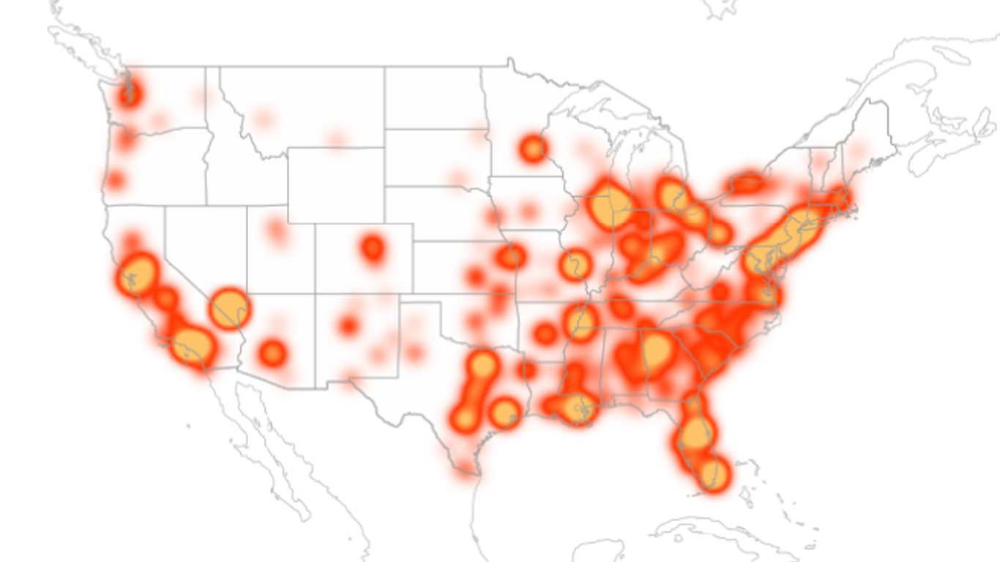

Total Incidents

Fatalities Per Capita
Total incident count per county and victim count per capita were highest in urban settings, however fatalities per capita were highest in rural settings (this may be beacuse of distance to emergency response or healthcare facility). As density decreased, the fatality rate increased.